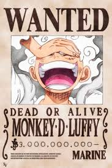
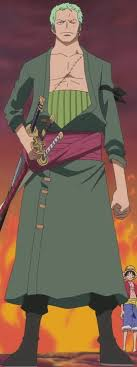
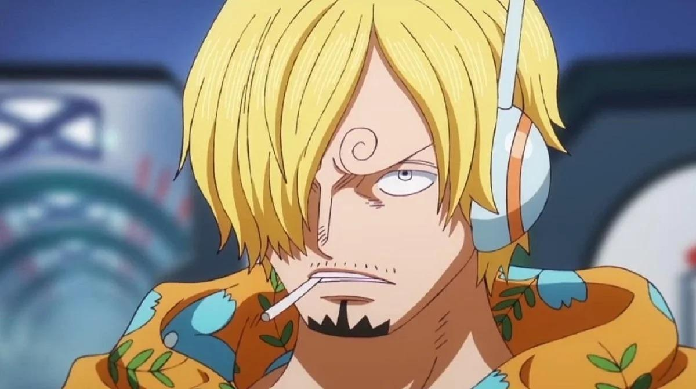
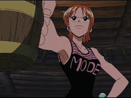
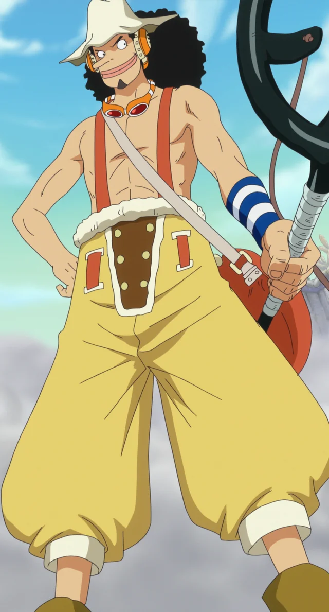
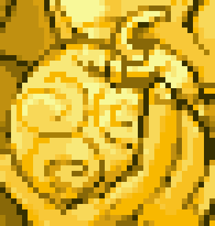
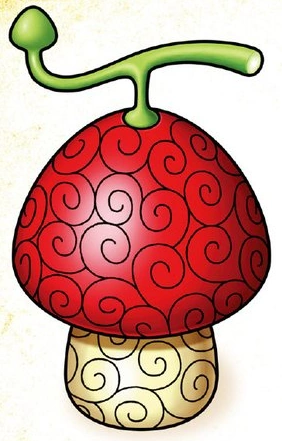
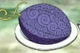

Луффі- головний герой яий хоче стати королем піратів.
Зоро- права рука Луффі та мечник який хоче стати найсилюнішим фехтувальщиком.
Санджи-ліва рука та головний кок на кораблі.
Намі-навігатор та 5 член команди.
Усоп-снайпер та 4 учасник соломених шляп.
Але це тіки половина всієї його команди на початку цу була основна команда але з часом збільшувалась.
В цьому світі панує океан який поділяється на 5 частини: East Blue, West Blue, North Blue, South Blue а на екваторі простягається Grand Line- це шлях через велику кількість островів та шлях до Ван-пісу

Дьявольські плоди є Одним із основних сил ван-пісу. Також вони поділяються на типи: Логія, Паремеція, Зоан. Вони можуть бути: давніми, міфічними наприклад у Луффі міфічиский зоан Хіто Хіто Номі модель ніка але на початку на говорили що це Гому Гому Ноа.
Логія-Редчайший и самый мощный из трех типов дьявольских плодов, плоды типа логия позволяют своим пользователям создавать, контролировать и преобразовывать свое тело в естественный элемент, такой как песок, сажа, грязь, дым, молния, растительная жизнь, свет, магма, и даже тьма. Были показаны также логии, которые могут превращать пользователя в искусственные элементы, такие как бумага или конфетный сироп.

Ямі Ямі но мі плід тьми

Мера Мера но мі плод вогню
Паса Паса но мі невідомо
Моку Моку но мі плод диму

Горо Горо но мі плод грому
Зоан-Пользователи дьявольских плодов типа зоан получают возможность превращаться в определенное животное, а также превращаться в гибридную форму, которая сочетает в себе атрибуты их собственного вида и вида, в который плод позволяет им превращаться. В отличие от других дьявольских плодов, плоды типа зоан, как говорят, обладают собственной волей. Недавние научное открытие позволяет интегрировать плоды зоан в неодушевленные предметы, оживляя объект и придавая ему стандартные трансформации зоана.

Хіто Хіто но мі модель: ніка

Уо Уо но Ми, модель: Сэйрю

Нэко Нэко но Ми, модель: Леопард

Хито Хито но Ми модель: людина
Ину Ину но Ми, модель: Окути но Маками
Паремеція-Наиболее распространенный из трех типов дьявольских плодов, плоды типа парамеция предоставляют своим пользователям любую из множества сверхчеловеческих способностей; эти способности включают в себя такие вещи, как генерация ударной волны и захват на цели. Эти плоды могут изменять характеристики тела пользователя, придавая ему скользкое телосложение, тело из лезвий или способность безвредно разделить свое тело на части. Некоторые парамеции позволяют пользователю изменять людей, объекты и окружающую среду вокруг них, например заставлять предметы левитировать или превращая людей в игрушки. Наконец, есть некоторые плоды, которые позволяют пользователям создавать вещества и манипулировать ими, например [Дору Дору но Ми|воск]] и яд. Определяющей характеристикой плодов парамеций является то, что способности, которые они предоставляют, отличаются от способности превращаться в животных или превращать своє тело в природные элементы, подобно плодам двух других категорий.

Іто Іто но мі

Хана Хана но мі

Баку Баку но мі

Ава Ава но мі
Хоро Хоро но мі